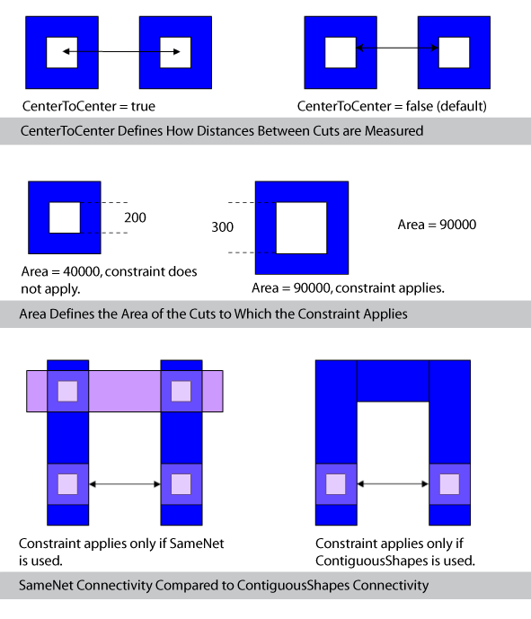

|
 |
 |
||||||
|
|
|
||||||
The oacMinViaSpacing layer constraint specifies the via cut spacing for cuts on the same net or for cuts on the same metal. An optional parameter determines whether cut spacing is measured edge-to-edge or center-to-center. Another optional parameter designates whether the constraint applies to shapes having any connectivity, to shapes having only same-net connectivity, or only to cut shapes on the same metal. An optional area parameter controls whether cuts must have an area larger than a specified value before the spacing applies.
| Constraint type: | oaLayerConstraint |
| Value types: | oaIntValue, oaInt1DTblValue, oaInt2DTblValue |
| Database types: | oaDesign, oaTech |
| Object types: | oaAppObject |
The following value types are supported by this constraint:
The object used for storing the spacing value is dependent on whether spacing is independent of width.
Units: DBU
Spacing is dependent on the width of one of two shapes.
Units: DBU
Spacing is dependent on the width of both shapes
Units: DBU
The following parameters are supported by this constraint:
| Name | Value Type | Units | Default | Description | ||||||||||||
|---|---|---|---|---|---|---|---|---|---|---|---|---|---|---|---|---|
| oaCenterToCenter oacCenterToCenterConstraintParamType |
oaBooleanValue | Boolean | False |
This parameter is a boolean that designates whether cut clearance is measured from the center of one cut to the center of the other cut. If not specified, cut clearance is measured from edge to edge. |
||||||||||||
| oaConnectivityType oacConnectivityTypeConstraintParamType |
oaIntValue | Enum | any |
This parameter uses an enumerated value of oacAnyConnectivityType to designate that the constraint must be met for any type of connectivity, uses oacSameNetConnectivityType to designate that the constraint only applies to cuts on the same net. This parameter is represented by an oaConnectivityType enumeration:
|
||||||||||||
| oaArea oacAreaConstraintParamType |
oaIntValue | DBU Square | None |
This oaAreaType parameter uses an oaIntValue to specify the cut area, which when exceeded, requires the specified clearance. The value for this parameter is assumed to be greater than the default clearance value. |
||||||||||||
| parallelRunLength oacParallelRunLengthConstraintParamType |
oaIntValue | DBU | 0 |
The value of this parameter can be defined as follows:
|
||||||||||||
| exactParallelRunLength oacExactParallelRunLengthConstraintParamType |
oaIntValue | DBU | None |
The constraint only applies if the parallel run is exactly this value. This parameter is mutually exclusive with parallelRunLength parameter. |
||||||||||||
| distanceMeasureType oacDistanceMeasureTypeConstraintParamType |
oaIntValue | Enum | euclidian |
This parameter should be set to oacManhattanDistanceMeasureType for a max XY rule. The default value for this parameter is oacEuclidianDistanceMeasureType. This parameter is represented by an oaDistanceMeasureType enumeration:
|
||||||||||||
| exactSpacing oacExactSpacingConstraintParamType |
oaBooleanValue | Boolean | False |
When this parameter value is true, then the spacing has to be exactly the value of the constraint. This parameter would only be used together with exactParallelRunLength. |

Copyright 2002 - 2010 Cadence Design Systems, Inc.
All rights reserved.